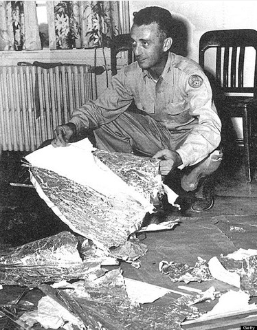
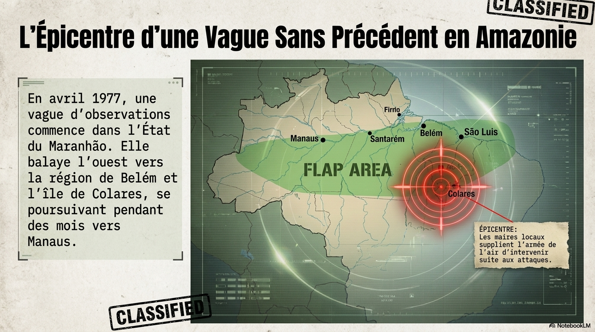
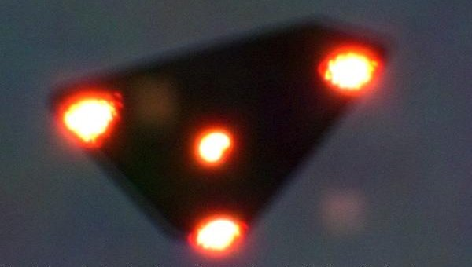
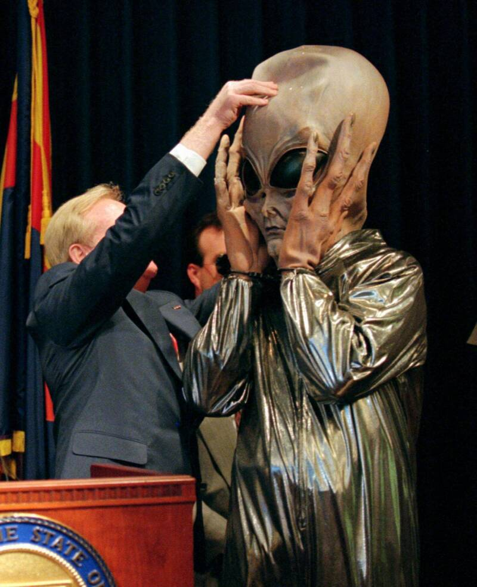

Cas décrits dans ce site
Liste des dossiers majeurs. Chaque fiche renvoie vers une page dediee que tu peux enrichir avec une chronologie, des liens et des sources.
| Cas | Date | Lieu | Description | Observation la plus folle | Explication officielle | |
|---|---|---|---|---|---|---|
 Carrousel de Washington
Carrousel de Washington
|
Juillet 1952 | Washington D.C., États-Unis | Vague d'échos radar et d'observations visuelles simultanées au-dessus de la capitale américaine, confirmées par militaires, civils et pilotes. | Accélérations relevées à Mach 10 ; les objets semaient les chasseurs F-94 puis revenaient se positionner au-dessus de la ville dès que les avions s'éloignaient. | Inversion de température — contestée par de nombreux météorologues et contrôleurs radar. | Fiche |
|
 Roswell |
Juillet 1947 | Nouveau-Mexique, États-Unis | Débris récupérés dans un ranch ; communiqué militaire initial évoquant un « disque volant », rapidement rectifié. Jalon central de la culture ufologique. | Des témoins décrivent des matériaux aux propriétés insolites et des corps non humains évacués par l'armée. | Ballon météorologique, puis ballon espion Mogul (version de 1994). | Fiche |
|
 Opération Prato |
1977–1978 | Colares, Pará, Brésil | Première enquête officielle de la Force aérienne brésilienne sur une vague d'OVNIs. ~400 victimes de faisceaux lumineux. Archives partiellement déclassifiées. | Deux décès confirmés par le médecin-chef de Colares ; le responsable de l'enquête retrouvé mort pendu quelques mois après ses premières déclarations publiques. | Aucune explication officielle publiée. Opération suspendue sans justification. | Fiche |
|
 Vague belge |
Nov. 1989 – Avr. 1990 | Belgique | Série d'observations de triangles volants silencieux par des milliers de témoins civils et militaires, dont des policiers. | Deux F-16 de la Force aérienne belge en interception ; le radar accroche un objet qui effectue des manœuvres impossibles pour un aéronef connu. | Non élucidée officiellement. Un célèbre canular photographique a fragilisé une partie des preuves visuelles. | Fiche |
|
 Lumières de Phoenix |
Mars 1997 | Phoenix, Arizona, États-Unis | Formation en V observée par des milliers de personnes sur 500 km de l'Arizona, suivie de lumières stationnaires filmées au-dessus de Phoenix. | Le gouverneur de l'État, d'abord moqueur en conférence de presse, reconnut publiquement des années plus tard avoir lui-même observé l'objet. | Fusées éclairantes larguées lors d'un exercice militaire (Maryland National Guard). | Fiche |
 Incident Nimitz
Incident Nimitz
|
Novembre 2004 | Au large de San Diego, États-Unis | Objet dit « Tic Tac » détecté au radar du USS Princeton pendant plusieurs jours, puis intercepté visuellement par des pilotes de F/A-18. | Aucune signature infrarouge, aucun système de propulsion visible, descente de 24 000 m en quelques secondes. Vidéo FLIR déclassifiée par le Pentagone. | Aucune explication officielle — cas non résolu selon le rapport du Pentagone (AATIP/AARO). | Fiche |
Mise a jour des cas
Ce site est en consultation uniquement: il n est pas possible d ajouter des cas directement depuis l interface. Les ajouts et modifications se font via le depot GitHub du projet.